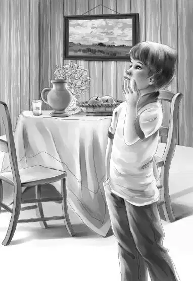

Chapter 10 David Explains
杰西站在门口。
护林员领着印第安男孩一走进杂货店，她便立刻揽住他的肩膀安慰道：“别害怕！我们是来帮你的！”
男孩没有抬头，只是把淋湿的头发向后理了理。
“这孩子是打缅因州来的。”一名护林员说，“他从收音机里听说了平古峰的事情，就马上搭车赶了过来。他对那个山洞很感兴趣，至于为什么，目前我还不清楚。”
大家都坐了下来，男孩坐在一张木椅上，衣服上的雨水不停滴落在地板上。
护林员队长脱下雨衣，在桌旁坐下，对男孩说道：“孩子，这个村子不大，要是有外人进来，我们马上就能认出来。我们想知道，你来这儿的目的是什么，想要得到什么，还有你为什么要跑。你最好说实话，省得浪费时间。就算是说了假话，我们也早晚会查出来。我来问你，你叫什么名字？”
男孩犹豫了一阵，终于开了口：“戴维·沃克。”
“印第安人的名字可不是这样的。”护林员说。
“没错。我的印第安名字叫：戴维·夜行者。”
“好棒的名字啊。”杰西悄声对亨利说，“可惜珞凡姓迪森。”
护林员接着问道：“为什么你对平古峰那么感兴趣？”
戴维深吸了一口气，他虽然看起来有些疲倦，但说出的话并不像是假的：“我是在缅因州出生的，可我并不属于那里——我妈妈生活的部落原本就在这里，平古峰的故事还是她讲给我听的。”
“什么故事？”班尼惊呼道。
戴维看了班尼一眼，脸上没有丝毫笑容：“这些故事可能是假的，不过其中一个故事涉及我们部落的宝贝。我想，我该把它找到才是。”
“就算找到了，也该属于你妈妈所在的部落，不是吗？”护林员问道。
“没错，不过族人早就去世了，我是部落里最后一名成员——连我妈妈也不在了。”
听到这话，大家顿时沉默了，不难想象，这个无家可归的男孩是如何独自长大的。
“你上过学吗，孩子？”护林员问道。
“上过，但不经常去。有时候上几个星期的课，就去打猎，然后再去上几天课。”
“那你靠什么生活呢？有工作吗？”护林员问道。
“有。”戴维回答，“我干过很多活，不过都不怎么喜欢。我砍过柴，铲过雪，还打理过菜园——这算是我最喜欢的一份工作了。”
“那在这儿，你打算怎么生活呢？”护林员问道，“身上有钱吗？”
“没有。我本打算做脚夫，搬运东西上山赚点钱，因为我对爬山很在行，可是大家全都虎视眈眈地盯着我看，我一害怕，就跑掉了。”
奥登先生终于开口了：“戴维，如果我猜得不错的话，全新的生活正在等着你。不过你现在累了，我们今晚也问得够多了。”
戴维看了奥登先生一眼，无须旁人多说，他立刻知道自己找到了一位朋友：“谢谢您，先生。”
“既然爷爷会猜，那我也可以。”班尼说，“我猜，戴维可以跟咱们去旅馆，吃点东西，换一身干爽的衣服。可以吗？”
“我的房间还有张空床。”卡特先生说，“他可以睡在那儿，怎么样，戴维？”
男孩点了点头，却听奥登先生说道：“咱们得征求一下护林员的意见，看他们怎么说。”接着，他对护林员说：“这样安排可以吗？这个孩子我带回去，由我来负责照顾。我看得出来，他没什么恶意的。”
护林员早知道卡特先生在联邦调查局当过差，于是便说：“当然可以。这孩子又没干什么坏事。”
“咱们最好马上动身。”杰西说，“戴维得吃点东西才行。”
“戴维、班尼和杰西坐我的车。”卡特先生说，“亨利、奥登先生和奥斯古博士坐你的。”
两辆汽车很快开到了旅馆。一路上，班尼叽叽喳喳说个不停，卡特先生和杰西也聊得不亦乐乎。但那个印第安男孩却始终一言不发。
“你先去洗个澡，我们给你找些干衣服。”亨利说道。
话音一落，他立刻在衣柜里翻腾起来。最后，他给戴维找出一套干爽的衣服，虽然大得不太合身，却也能凑合着穿穿，鞋子倒挺合适的。
大家洗漱完毕，换了衣服，在餐厅里碰头了。
维莉一见到男孩，不禁暗想：“长得还挺帅呢！”
“大家都来喝点热汤吧。”奥登先生说，“我跟戴维一样，都快累坏了。”
“这个男孩好久没吃东西了，希望他不会晕倒才好。”卡特先生心想。
戴维先是观察了一番，看大家是怎样喝汤的，随后才照着样子喝了起来。
“这孩子倒是很有心。”卡特先生暗想，“看来他是不会做坏事的。”
卡特先生一直有个问题想问，不过直到男孩喝完了汤，脸上恢复了一丝血色，他才开口：“戴维，我们听说在一个山洞里藏着个皮袋——袋子里装着宝物，据说它是属于一个过世已久的印第安人。你听说过这个故事吗？”

“听说过，先生！”戴维顿时来了精神，“我听到的还远不止这些。据说那袋子最初属于一个外国人，后来他把袋子送给了一个印第安人，而印第安人生怕有人跟踪，于是就摘了一大捆玉米，把袋子藏在玉米下面了。”
奥斯古博士始终微笑着，一边喝汤，一边默默地听着，直到烤鸡端上餐桌，他才清了清喉咙，把所有人的注意力引到了自己身上：“我想说的是，你们讲的事情固然重要，也很有趣，但也不能忘了平古峰啊！”
“有平古峰的新消息吗？快说给我们听啊！”大家齐声喊道。
“好吧。”奥斯古博士说，“目前，台架已经搭好了，而我又朝洞里爬了25英尺。”
“发现皮袋了吗？”班尼叫道。
“没！”奥斯古博士微微一笑，“不过倒是有让我更感兴趣的东西——洞里的石头很大，而且非常光滑。”
“那肯定有什么地方可以用来藏宝贝吧，奥斯古博士？”班尼说道。
“你得自己过去找才行。”奥斯古博士说，“我老眼昏花的，或许遗漏了什么，你年轻，眼力好，说不准能有所发现呢。”